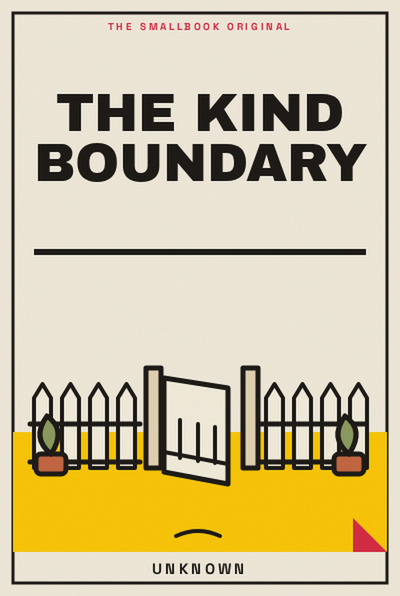

Library › Psychology & People
The Kind Boundary - Summary & Key Lessons

A boundary is not a wall against people.
📖 OPEN THE FULL INTERACTIVE BREAKDOWN →🌐 Read it in Hindi, Hinglish, Gujarati, Tamil & 22 more languages, with audio.
💡 The Big Idea
A boundary is not a wall against people. It is a clear agreement about what you can do with care and consistency. The lessons below are designed to be used slowly: read one, try it in a real situation, and return with evidence rather than agreement.
🧠 The 8 Key Lessons
Lesson 1: Name the Limit
Chapter 1: Name the Limit
Unspoken limits become resentment because others cannot respond to what they do not know. A boundary is not a wall against people. It is a clear agreement about what you can do with care and consistency. The useful question is not whether this is perfectly true in every situation, but what it helps you notice before you act. Most people skip this step because the visible task feels urgent. The book asks you to slow down long enough to identify the constraint, trade-off or relationship underneath the task. Once that is clear, a smaller and more reliable move becomes possible. Repeated over time, that move changes the system rather than merely decorating the surface of it.
📖 Example: A student tells friends they cannot answer calls during an exam hour instead of silently ignoring them. The point is not to copy the situation exactly. Notice the sequence: make the hidden condition visible, choose the next action that respects it, and then observe what happens. That turns a memorable story into a testable practice instead of a slogan. Read the full example →
⚡ Do this: Write one limit in a plain sentence without apology.
Lesson 2: Use a Warm No
Chapter 2: Use a Warm No
Kindness and clarity can coexist. A boundary is not a wall against people. It is a clear agreement about what you can do with care and consistency. The useful question is not whether this is perfectly true in every situation, but what it helps you notice before you act. Most people skip this step because the visible task feels urgent. The book asks you to slow down long enough to identify the constraint, trade-off or relationship underneath the task. Once that is clear, a smaller and more reliable move becomes possible. Repeated over time, that move changes the system rather than merely decorating the surface of it.
📖 Example: A colleague says, “I cannot take this today, but I can look tomorrow,” rather than promising and failing. The point is not to copy the situation exactly. Notice the sequence: make the hidden condition visible, choose the next action that respects it, and then observe what happens. That turns a memorable story into a testable practice instead of a slogan. Read the full example →
⚡ Do this: Practise one no that includes a truthful alternative only if you mean it.
Lesson 3: Separate Discomfort From Wrongness
Chapter 3: Separate Discomfort From Wrongness
Feeling guilty after a boundary does not prove it was unfair. A boundary is not a wall against people. It is a clear agreement about what you can do with care and consistency. The useful question is not whether this is perfectly true in every situation, but what it helps you notice before you act. Most people skip this step because the visible task feels urgent. The book asks you to slow down long enough to identify the constraint, trade-off or relationship underneath the task. Once that is clear, a smaller and more reliable move becomes possible. Repeated over time, that move changes the system rather than merely decorating the surface of it.
📖 Example: A daughter declines a costly outing while still helping plan a cheaper one. The point is not to copy the situation exactly. Notice the sequence: make the hidden condition visible, choose the next action that respects it, and then observe what happens. That turns a memorable story into a testable practice instead of a slogan. Read the full example →
⚡ Do this: When guilt arrives, ask whether you broke a value or merely disappointed an expectation.
Lesson 4: Set the Boundary Early
Chapter 4: Set the Boundary Early
A small early limit prevents a dramatic late explosion. A boundary is not a wall against people. It is a clear agreement about what you can do with care and consistency. The useful question is not whether this is perfectly true in every situation, but what it helps you notice before you act. Most people skip this step because the visible task feels urgent. The book asks you to slow down long enough to identify the constraint, trade-off or relationship underneath the task. Once that is clear, a smaller and more reliable move becomes possible. Repeated over time, that move changes the system rather than merely decorating the surface of it.
📖 Example: A freelancer states revision limits before beginning work. The point is not to copy the situation exactly. Notice the sequence: make the hidden condition visible, choose the next action that respects it, and then observe what happens. That turns a memorable story into a testable practice instead of a slogan. Read the full example →
⚡ Do this: Name one expectation before the next commitment begins.
Lesson 5: Be Consistent
Chapter 5: Be Consistent
Changing the rule under pressure teaches people to keep pushing. A boundary is not a wall against people. It is a clear agreement about what you can do with care and consistency. The useful question is not whether this is perfectly true in every situation, but what it helps you notice before you act. Most people skip this step because the visible task feels urgent. The book asks you to slow down long enough to identify the constraint, trade-off or relationship underneath the task. Once that is clear, a smaller and more reliable move becomes possible. Repeated over time, that move changes the system rather than merely decorating the surface of it.
📖 Example: A parent keeps the phone-off dinner rule even on a busy day. The point is not to copy the situation exactly. Notice the sequence: make the hidden condition visible, choose the next action that respects it, and then observe what happens. That turns a memorable story into a testable practice instead of a slogan. Read the full example →
⚡ Do this: Choose one boundary you can keep for seven days.
Lesson 6: Leave Room for Repair
Chapter 6: Leave Room for Repair
Boundaries can be revised after new information, without pretending they never existed. A boundary is not a wall against people. It is a clear agreement about what you can do with care and consistency. The useful question is not whether this is perfectly true in every situation, but what it helps you notice before you act. Most people skip this step because the visible task feels urgent. The book asks you to slow down long enough to identify the constraint, trade-off or relationship underneath the task. Once that is clear, a smaller and more reliable move becomes possible. Repeated over time, that move changes the system rather than merely decorating the surface of it.
📖 Example: Two friends revisit a travel plan when one faces a family emergency. The point is not to copy the situation exactly. Notice the sequence: make the hidden condition visible, choose the next action that respects it, and then observe what happens. That turns a memorable story into a testable practice instead of a slogan. Read the full example →
⚡ Do this: After a conflict, state what you want to keep and what needs to change.
Lesson 7: Do Not Manage Other Feelings
Chapter 7: Do Not Manage Other Feelings
You can be respectful without taking responsibility for every reaction. A boundary is not a wall against people. It is a clear agreement about what you can do with care and consistency. The useful question is not whether this is perfectly true in every situation, but what it helps you notice before you act. Most people skip this step because the visible task feels urgent. The book asks you to slow down long enough to identify the constraint, trade-off or relationship underneath the task. Once that is clear, a smaller and more reliable move becomes possible. Repeated over time, that move changes the system rather than merely decorating the surface of it.
📖 Example: A worker gives a clear resignation notice despite a manager’s disappointment. The point is not to copy the situation exactly. Notice the sequence: make the hidden condition visible, choose the next action that respects it, and then observe what happens. That turns a memorable story into a testable practice instead of a slogan. Read the full example →
⚡ Do this: Before a hard conversation, separate what is yours to communicate from what is theirs to feel.
Lesson 8: Pair Limits With Care
Chapter 8: Pair Limits With Care
The healthiest boundaries protect relationships by making expectations reliable. A boundary is not a wall against people. It is a clear agreement about what you can do with care and consistency. The useful question is not whether this is perfectly true in every situation, but what it helps you notice before you act. Most people skip this step because the visible task feels urgent. The book asks you to slow down long enough to identify the constraint, trade-off or relationship underneath the task. Once that is clear, a smaller and more reliable move becomes possible. Repeated over time, that move changes the system rather than merely decorating the surface of it.
📖 Example: A caregiver takes one evening off each week and returns with more patience. The point is not to copy the situation exactly. Notice the sequence: make the hidden condition visible, choose the next action that respects it, and then observe what happens. That turns a memorable story into a testable practice instead of a slogan. Read the full example →
⚡ Do this: Name one relationship where a small limit would make your care more sustainable.
✅ 5-Step Action Plan
- Write one limit in a plain sentence without apology.
- Practise one no that includes a truthful alternative only if you mean it.
- When guilt arrives, ask whether you broke a value or merely disappointed an expectation.
- Name one expectation before the next commitment begins.
- Choose one boundary you can keep for seven days.
⚠️ When This Doesn't Work
A book can offer a useful lens, not a universal rule. Your money, health, family duties, workplace power and access to support change what is possible. Keep the principle, adapt the practice, and ask for expert help where the stakes are high.
💀 The Graveyard Proves It
💬 Best Quotes from The Kind Boundary
- “A boundary is not a wall against people.”
- “Small, honest experiments are more useful than impressive intentions.”
- “A good idea becomes valuable only when it changes the next choice.”
Interactive version: mark lessons as read, listen in your language, share quote cards.